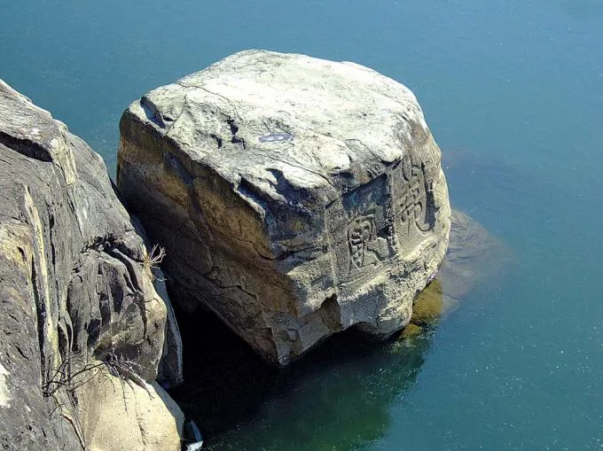
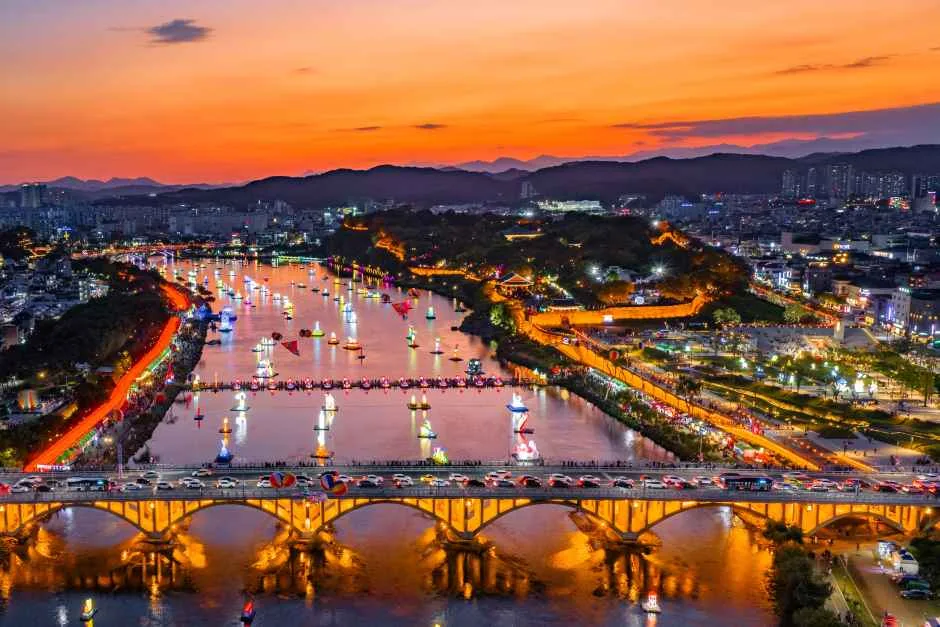
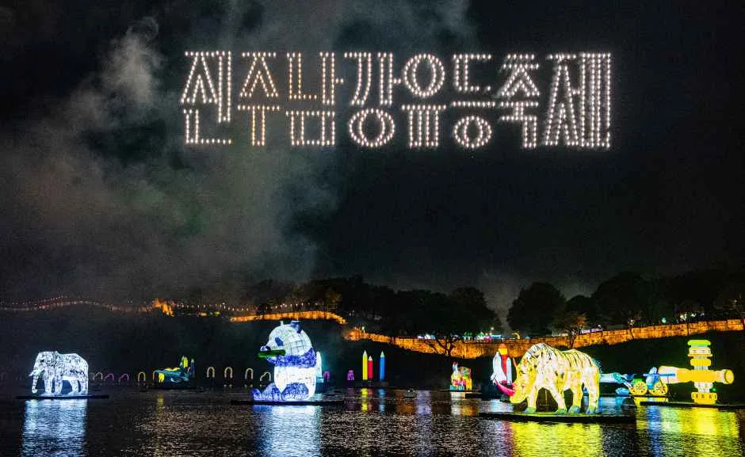
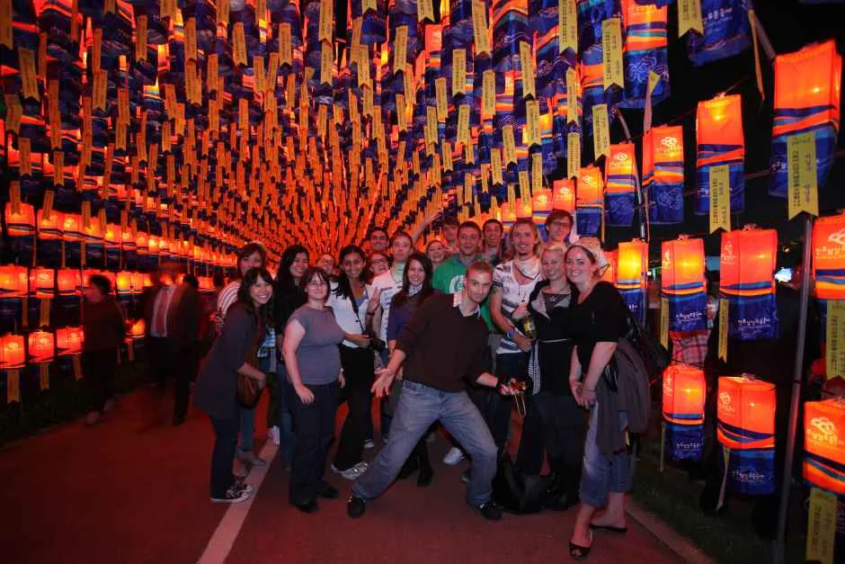
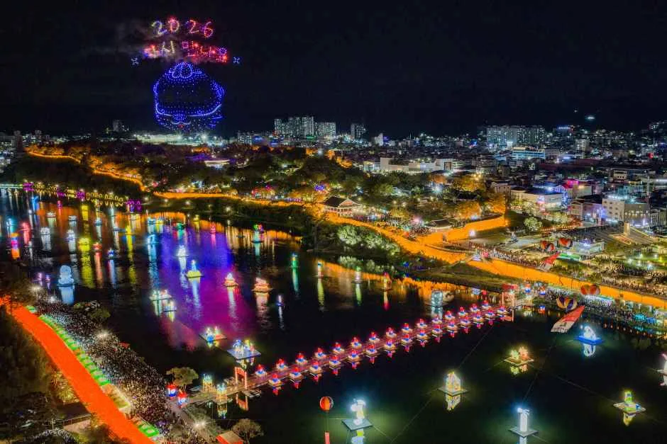
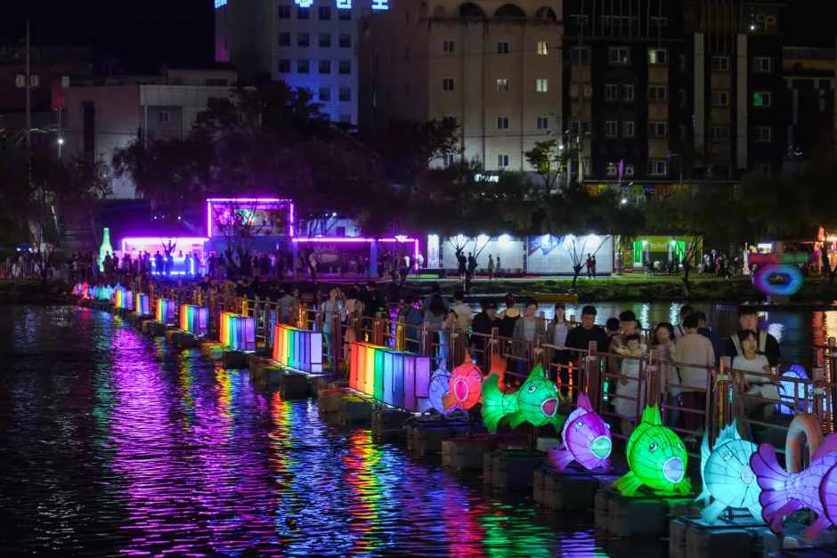
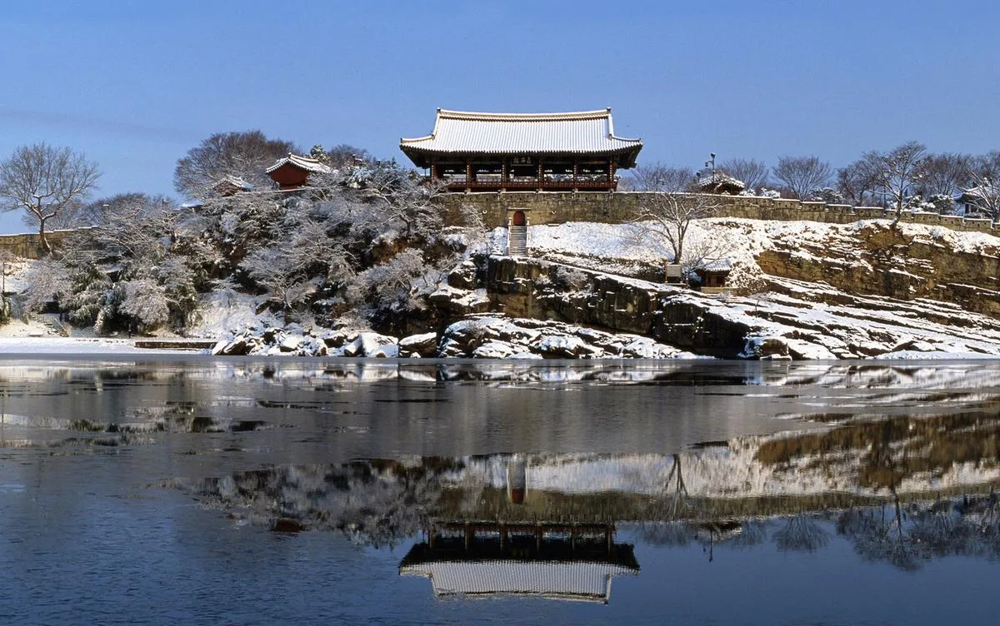

▲ 노을 무렵 남강에 유등이 떠오르기 시작하는 진주남강유등축제 전경. 오른쪽 언덕이 진주성, 그 위 누각이 촉석루다
경상남도 진주시가 매년 가을 진주성과 남강 일원에서 여는 진주남강유등축제가 2026년에도 어김없이 돌아온다. 올해는 10월 3일(토)부터 18일(일)까지 16일간 열리며, 문화체육관광부 대한민국 대표축제이자 5년 연속 글로벌 육성축제로 선정된 국내 최고 수준의 가을 축제다. 강물 위에 뜬 형형색색 유등이 만들어내는 야경도 장관이지만, 그 이전에 이 유등은 임진왜란 당시 진주성을 지키던 군사 신호였다는 사실을 아는 사람은 많지 않다. 이 기사는 축제의 유래부터 2026년 일정, 불꽃놀이·드론라이트쇼 날짜, 자동차로 방문할 때 필요한 주차·교통통제 정보, 함께 둘러보기 좋은 진주 시내 명소까지 방문 순서대로 정리했다.
1. 왜 하필 '유등'일까 — 진주성 전투와 논개의 이야기

▲ 촉석루 아래 남강가의 의암(義巖) 바위. 논개가 왜장을 안고 강물에 몸을 던진 곳으로 전해진다 ⓒ 진주시청
유등축제의 뿌리는 1592년 제1차 진주성 전투(진주대첩)로 거슬러 올라간다. 당시 진주목사 김시민 장군이 이끄는 3,800여 명의 군관민이 왜군 2만여 명을 상대로 성을 지켜냈는데, 이때 성 밖 의병과 지원군이 남강에 등불을 띄워 왜군의 도하를 저지하는 신호로 쓰는 한편, 성안 가족들에게 안부를 전하는 통신 수단으로도 활용했다고 전해진다. 이듬해인 1593년 벌어진 제2차 진주성 전투에서는 성이 결국 함락되며 7만여 민·관·군이 순국했고, 이때 촉석루 아래 의암(義巖) 바위에서 진주 기생 논개가 왜장을 끌어안고 남강에 투신한 이야기도 전해 내려온다. 오늘날 유등축제는 이 넋을 기리는 진혼과, 가정과 나라의 안녕을 비는 소망의 의식에서 출발해 지금의 대형 문화관광축제로 발전한 것이다.
2. 2026년 일정 — 10월 3일부터 18일까지 16일간

▲ 진주교와 남강 유등 부교를 함께 담은 항공사진. 축제 기간에는 진주성 인근 도로가 상당히 붐빈다 ⓒ 대한민국 구석구석
2026 진주남강유등축제는 진주성과 남강 일원을 무대로 10월 3일(토)부터 18일(일)까지 열린다. 유등 점등은 매일 저녁 6시부터 자정까지 이어지며, 강변 부교와 체험 부스는 낮 1시부터 밤 11시까지 운영된다. 입장은 전 구간 무료이지만, 사랑다리(부교) 건너기나 소망등 달기, 유등 띄우기 같은 일부 체험 프로그램은 별도 요금이 붙는다.
| 항목 | 내용 |
|---|---|
| 기간 | 2026년 10월 3일(토) ~ 10월 18일(일), 16일간 |
| 장소 | 진주성 및 진주 남강 일원(경남 진주시 남강로 626 일대) |
| 유등 점등 시간 | 매일 18:00 ~ 24:00 |
| 부교·체험부스 운영 | 매일 13:00 ~ 23:00 |
| 입장료 | 무료(일부 체험 프로그램만 유료) |
| 주요 체험 | 사랑다리 건너기, 소망등 달기, 유등 띄우기 체험 |
3. 놓치면 아까운 밤 — 불꽃놀이와 드론라이트쇼 날짜

▲ 드론이 밤하늘에 그려낸 축제 로고 글자와 남강 위 대형 동물 유등. 불꽃놀이와 드론라이트쇼가 겹치는 날에는 두 연출을 한 화면에 담을 수 있다 ⓒ 대한민국 구석구석
축제 기간 중에서도 가장 사람이 몰리는 순간은 단연 수상 불꽃놀이와 드론라이트쇼가 열리는 밤이다. 수상 불꽃놀이는 진주교와 천수교 사이 남강 구간에서 쏘아 올리며, 드론라이트쇼는 남강 상공에서 수백 대의 드론이 만드는 대형 편대 연출로 진행된다. 두 행사 모두 우천이나 강풍 시 취소되거나 일정이 조정될 수 있고, 특히 드론라이트쇼의 정확한 시작 시각은 참고 매체마다 오후 9시 전후로 다소 엇갈려 소개되고 있어, 방문 전 반드시 공식 홈페이지나 SNS 공지로 당일 시각과 진행 여부를 다시 확인하는 편이 안전하다.

▲ 수백 대의 드론이 남강 상공에 대형을 그리는 드론라이트쇼. 10월 3·10·17일 저녁 진행되며, 정확한 시작 시각은 공식 홈페이지에서 재확인이 필요하다 ⓒ 대한민국 구석구석
| 구분 | 날짜 | 시간 | 장소 |
|---|---|---|---|
| 수상 불꽃놀이 | 10월 3일(토) | 20:00 | 남강 진주교~천수교 구간 |
| 10월 9일(금) | 20:00 | ||
| 10월 17일(토) | 20:00 | ||
| 드론라이트쇼 | 10월 3일(토) | 21:00 전후* | 남강 상공(촉석루 일원) |
| 10월 10일(토) | 21:00 전후* | ||
| 10월 17일(토) | 21:00 전후* |
* 수상 불꽃놀이(20:00)는 여러 참고 매체에서 동일하게 확인됐지만, 드론라이트쇼 시작 시각은 매체별로 21시~22시로 다르게 소개되고 있다. 진주시 보도자료(2026년 7월) 기준 드론라이트쇼 날짜는 10월 3·10·17일로 확인되나 정확한 시각은 공지되지 않았으므로, 위 시각은 참고용이며 방문 전 공식 홈페이지·SNS에서 반드시 재확인하기 바란다.
관람 명당으로는 진주성 안쪽 언덕과 촉석루 앞 잔디밭, 그리고 강 건너 진주교 남단 둔치가 꼽힌다. 특히 촉석루 앞쪽은 성곽·누각과 불꽃·드론 연출을 한 프레임에 담을 수 있어 사진 애호가들이 즐겨 찾는 자리다. 다만 이 구간은 불꽃놀이·드론쇼가 있는 날 저녁이면 일찌감치 자리가 차므로, 오후 4~5시 이전에 도착해 자리를 잡는 것이 좋다.
4. 소망등 달기와 사랑다리 — 남강을 건너는 체험

▲ 각자의 소원을 적어 매다는 소망등 터널. 축제 기간 내내 관람객들의 발길이 끊이지 않는 포토스팟이다 ⓒ 진주남강유등축제
강물 위 유등만큼이나 축제의 상징으로 꼽히는 것이 소망등 달기 체험이다. 등에 각자의 소원이나 가족의 안녕을 적어 강변 소망등 터널에 매다는 프로그램으로, 유료 체험(1인 1만 원 안팎)이지만 축제를 대표하는 기념 사진 명소로 꾸준히 인기가 높다. 남강을 가로지르는 부교인 사랑다리를 건너며 물고기 모양 유등, 세계 각국 전통등을 가까이서 구경하는 코스도 있다. 부교 이용은 편도와 종일 이용권으로 나뉘며, 야간에는 대기 줄이 길게 늘어서므로 저녁 8시 이전에 건너 두는 편이 수월하다.

▲ 남강을 가로지르는 부교 '사랑다리'. 물고기 모양 유등이 줄지어 있어 아이 동반 방문객들에게 특히 인기다 ⓒ 진주남강유등축제
5. 자동차로 갈 때 — 주차장·교통통제 정보
진주남강유등축제는 진주 구도심 한복판, 진주성을 낀 좁은 강변 도로에서 열리는 만큼 자가용 방문객이라면 교통 정체를 각오해야 한다. 불꽃놀이·드론쇼가 있는 주말 저녁에는 진주성 인근 도로 일부 구간에서 시간대별 교통통제가 이뤄지고, 진주교 남단은 오후 늦게부터 극심한 정체가 발생하는 경우가 많다. 축제장 바로 앞 도로변 주차는 사실상 불가능하다고 보고, 아래 지정 주차장을 이용한 뒤 도보나 셔틀로 접근하는 방식을 추천한다.
| 주차장 | 축제장까지 거리(도보) | 참고 사항 |
|---|---|---|
| 진주종합경기장 주차장 | 약 15~20분 | 대형 주차 공간, 축제 기간 임시 주차장으로 활용 |
| 진주교육대학교 | 약 10~15분 | 주말 저녁 조기 만차 가능성 높음 |
| 공영주차장(진주성 인근) | 약 5~10분 | 규모가 작아 저녁 시간대 가장 먼저 만차 |
| 봉곡광장·시청 인근 공영주차장 | 약 20~25분(셔틀 이용 권장) | 여유 있는 편, 도보 대신 셔틀버스 이용 추천 |
불꽃놀이·드론쇼가 예정된 날에는 오후 3~4시 이후 주요 주차장이 빠르게 채워지므로, 가능하면 오전이나 이른 오후에 도착해 차를 세워 두고 저녁까지 진주 시내를 둘러보는 일정을 짜는 편이 낫다. 진주역과 시외버스터미널에서 축제장까지는 대중교통이나 셔틀버스 이용도 고려할 만하다. 정확한 통제 구간과 임시 주차장 위치는 축제가 임박하면 진주시와 공식 홈페이지를 통해 공지되므로, 방문 직전 최신 안내를 다시 확인하는 것이 좋다.
진주남강유등축제 공식 홈페이지에서 교통·주차 공지 확인 가능6. 유등축제만 보고 가기엔 아쉽다 — 진주 연계 관광지

▲ 남강가 절벽 위에 자리한 촉석루. 사진은 겨울철 설경이지만, 진주 8경 중 제1경으로 꼽히는 진주성의 상징적 누각으로 계절마다 다른 풍경을 보여준다 ⓒ 진주시청
축제장인 진주성 자체가 이미 관광지다. 성 안에는 촉석루를 비롯해 국립진주박물관, 임진대첩계사순의단 등 임진왜란 관련 유적이 모여 있어 낮 시간에 미리 둘러보기 좋다. 촉석루는 남강과 의암, 성벽이 어우러진 풍경으로 CNN이 선정한 한국의 명소 목록에도 이름을 올린 바 있는 누각이다. 진주성에서 도보로 이동 가능한 진주중앙시장은 진주비빔밥, 진주냉면 등 향토 음식을 맛볼 수 있는 곳으로, 축제 관람 전후 식사 장소로 즐겨 찾는다. 낮에는 진주성과 시장, 저녁에는 유등과 불꽃놀이로 이어지는 하루 코스를 짜면 진주 여행을 알차게 채울 수 있다.
✅ 2026 진주남강유등축제, 가기 전 체크리스트
· 기간: 2026년 10월 3일(토)~18일(일), 진주성 및 남강 일원, 입장 무료
· 유래: 임진왜란 진주성 전투 당시 군사 신호로 쓰인 유등에서 시작, 논개·의암 이야기와도 연결
· 불꽃놀이: 10월 3·9·17일 밤 8시, 진주교~천수교 구간
· 드론라이트쇼: 10월 3·10·17일 저녁(정확한 시각은 공식 홈페이지 재확인 필요), 남강 상공
· 체험: 소망등 달기, 사랑다리(부교) 건너기, 유등 띄우기(일부 유료)
· 자가용 방문 시 진주종합경기장·진주교대 등 지정 주차장 이용 권장, 불꽃놀이·드론쇼 날은 오후 일찍부터 정체
· 연계 코스: 진주성·촉석루(낮)→진주중앙시장(식사)→남강 유등·불꽃놀이(밤)
· 정확한 통제 구간·주차장 위치는 방문 전 공식 홈페이지에서 재확인 필요